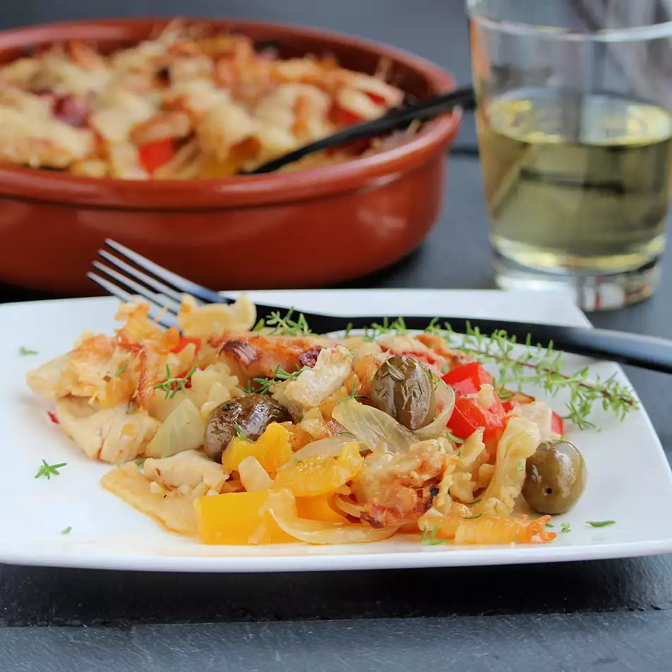

Mediterranean Chicken and Pepper Casserole

Description
If you feel the need for comfort food that is quick and easy to prepare, look no further
than this full-of-flavour Mediterranean Chicken Casserole. This one-pot meal is easy enough
for a weeknight or ideal for relaxed weekend entertaining. As a bonus, it can be made ahead
of time. Be certain, your family and friends will love it. This delicious Chicken and
Vegetable Casserole is an ideal one-pot meal. It needs little more than some crusty bread served alongside to enjoy with the delicious pan juices.
Ingredients
- 3 cups uncooked mafalda pasta
- 1 tablespoon olive oil
- 1 skinless, boneless chicken breast, cut into strips
- 1 small yellow onion, diced
- 1 small yellow bell pepper, diced
- 1 small red bell pepper, diced
- 8 cherry tomatoes
- ¼ cup Italian green olives
- 1 tablespoon fresh thyme leaves
- 1 teaspoon grated lemon zest
- ½ teaspoon red pepper flakes
- ¼ cup grated Pecorino Romano cheese
- ¼ cup grated Grana Padano cheese
Steps
- Preheat the oven to 350 degrees F (175 degrees C).
- Bring a pot of salted water to a boil. Cook pasta until flexible
but not soft, about 5 minutes. Drain.
- Heat oil in a stovetop- and oven-safe casserole dish over medium-high
heat. Cook and stir chicken strips until browned, 3 to 5 minutes. Add onion,
bell peppers, cherry tomatoes, olives, thyme, lemon zest, and pepper flakes.
Cook and stir until the onions have begun to look translucent, about 5 minutes.
Remove from heat. Stir in the half-cooked pasta.
- Sprinkle Pecorino Romano and Grana Padano over the pasta mixture.
- Bake in the preheated oven until bubbly and the cheeses have melted and browned,
about 15 minutes. Let rest for 5 minutes before serving.
Back to main page